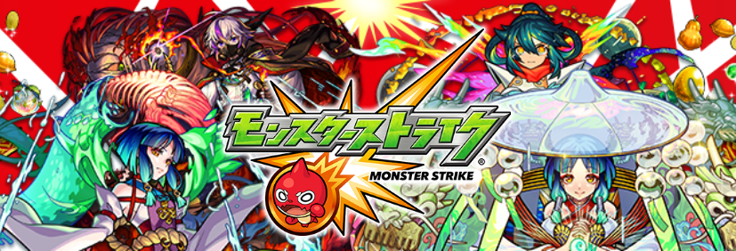
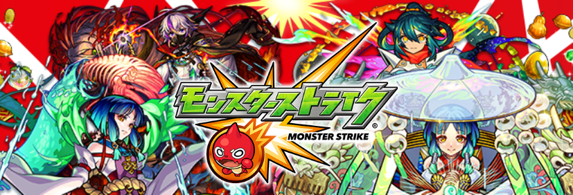
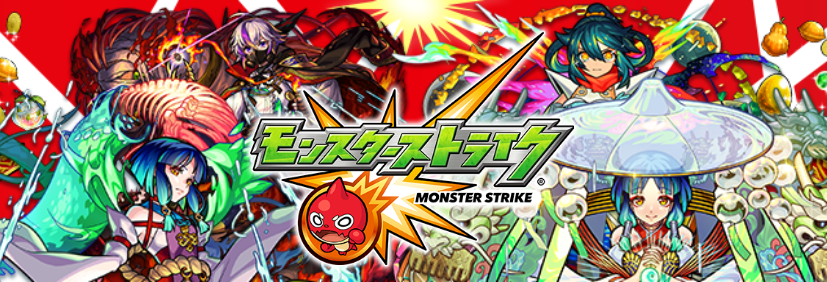
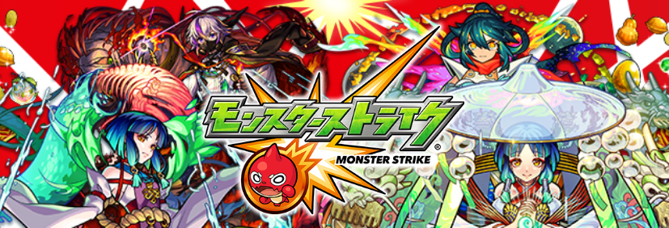

2023MIXI
引き続きモンスターストライクをよろしくお願いいたします。
※なお特設ページのためホームに戻るボタンは設置していません。2重送信防止のためこのままタブをお消しください。
注意
報酬がプレゼントされるのは3月1日になります。
本サイトは友人紹介は認めていますが、SNSなどへの公開は固く禁止しています。
万が一にもSNSなどへの投稿が発見された場合には法的措置を取らせていただきます。
この度のアンケートの目的
モンスターストライクの従来のアンケートの形はモンスターストライクアプリ内ブラウザでの回答という形でした。
しかし、この内部ブラウザという形ではユーザーのプライバシーが保守されず、情報が漏洩のリスクが見えてきたためであります。
この内部ブラウザの脆弱性につきましては、いまだ明るみに出た問題というものは存在しませんが、この先年月を重ねる程に高まっていくものだと考えております。
モンスターストライクは2023年4月を以てアンケートを外部ブラウザで行うものとします。これからもモンスターストライクにご協力をお願いします。